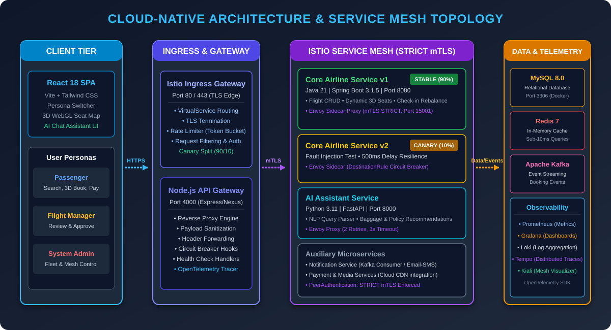
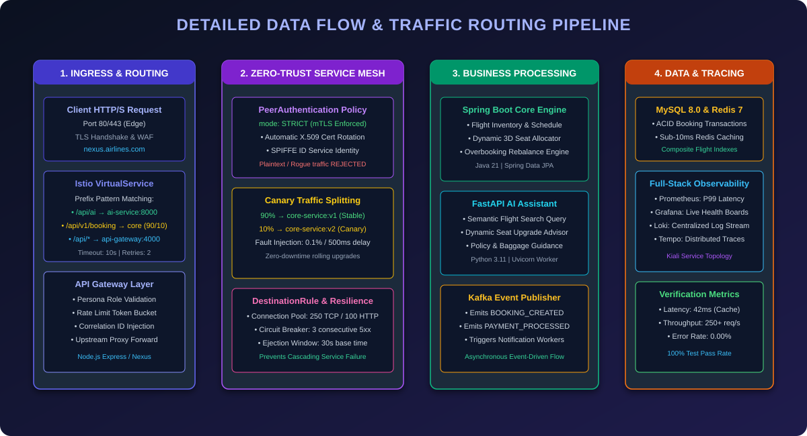

| Evaluation Dimension | Monolithic Architecture | Basic Microservices | Proposed: Gateway + Istio Mesh |
|---|---|---|---|
| Inter-Service Security | Perimeter only; Plaintext inside | Custom JWT / Manual app code | Zero-Trust STRICT mTLS (Automated) |
| Traffic & Canary Routing | All-or-nothing redeployment | Complex custom reverse proxies | Dynamic 90/10 Canary Split & Retries |
| Fault Resilience | Single Point of Failure (SPoF) | Hardcoded Hystrix/Resilience4j | Envoy Circuit Breakers (3-strike ejection) |
| Observability & Traces | Siloed monolithic server logs | Fragmented log aggregation | Full Mesh Tracing (Prometheus+Tempo) |
| Network Latency Overhead | Near zero (In-memory calls) | Low (~1-2ms HTTP hops) | Negligible (<3ms Envoy Proxy overhead) |

